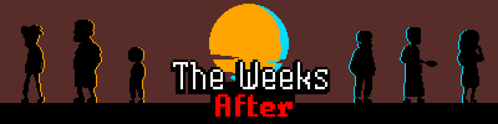
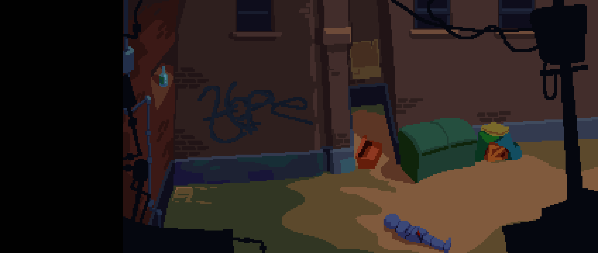
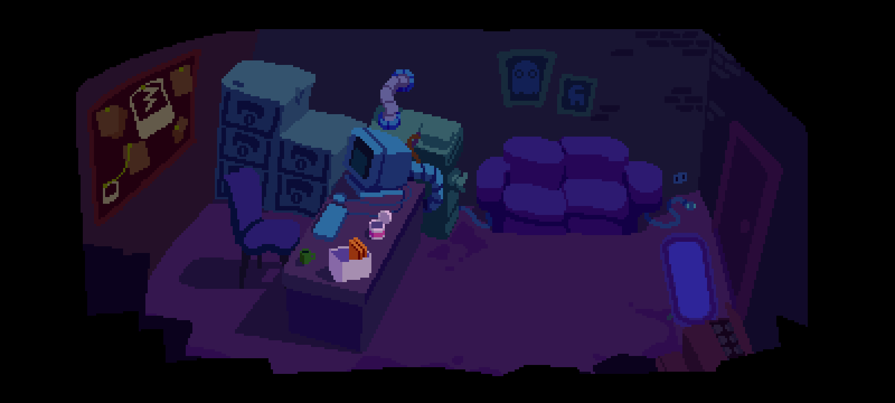
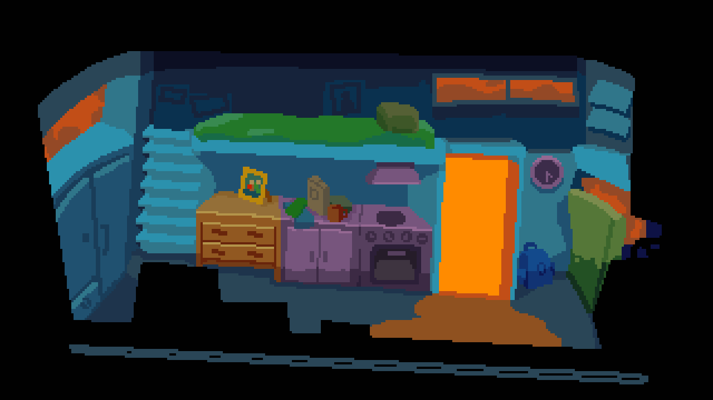

The Weeks After

Banner art.
The Weeks After is a point and click adventure game we made for our second capstone.
It draws inspiration from games like The Secret of Monkey Island. The story revolves around Adam, a detective,
taking a case that spirals into something more.
I was responsible for the art in the game.
Right now only "chapter one" is completed but perhaps we will pick up this project again in the future.



Locations.
Play the game!
Status: Released
> Download here! < Back to works